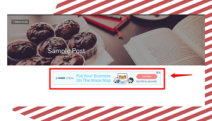

Лучшие способы создать бесплатный веб-сайт и заработать деньги
Новые возможности, которые предлагает Интернет, теперь могут позволить вам создать бесплатный веб-сайт и зарабатывать деньги.
Это может звучать слишком хорошо, чтобы быть правдой, но это возможно!
Если вы хотите создать веб-сайт и зарабатывать деньги бесплатно в качестве подработки или в качестве основного способа оплаты счетов, Интернет может научить вас многим способам заработка в Интернете .
Какими бы ни были ваши интересы, будь то писательство, музыка или маркетинг , Интернет открыл для вас новые возможности для создания бесплатного веб-сайта и зарабатывания денег.
В отличие от ранее, теперь вы можете создавать свои аудиохостинги, онлайн-журналы, виртуальные художественные выставки и многое другое, чтобы зарабатывать деньги . Мы изложили лучшие способы, как вы можете создать бесплатный веб-сайт и зарабатывать деньги, какими бы ни были ваши навыки и таланты.
1. Напишите блог
Вы можете вести блог и зарабатывать деньги с помощью Strikingly.
Если вам нравится писать, Strikingly предлагает множество шаблонов на выбор, чтобы вы могли создать свой блог-сайт.
Самое замечательное в ведении блога то, что вы можете писать абсолютно обо всем, что хотите. Конечно, пока это находится в одной нише, чтобы вы могли завоевать авторитет.
Если вы хотите создать бесплатный веб-сайт и зарабатывать деньги в разных нишах , вы можете создать нишевый веб-сайт для каждой из них. Важно то, что вы занимаете нишу, поэтому вы будете тем человеком, к которому люди должны знать что-то об их интересах.
Через некоторое время созданный вами блог начнет привлекать аудиторию с интересом, на котором вы сосредоточены. Как только это произойдет, вы начнете сотрудничать с другими блоггерами, чтобы увеличить свою аудиторию и в то же время помогать другим.
Гостевое письмо может помочь как вашему веб-сайту, так и веб-сайту вашего друга, чтобы вы могли лучше ранжироваться в поисковых системах.
Когда ваш блог действительно наберет обороты , вы начнете зарабатывать деньги как влиятельный человек, когда с вами будет работать нишевый рекламодатель.
Чтобы узнать, как зарабатывать деньги, создавая веб-сайт с помощью блогов, вы можете проверить это руководство, чтобы начать работу.
Помимо ведения блога, вы также можете зарабатывать деньги, используя свой веб-сайт для ведения блога, сделав его своим портфолио для написания контента для веб-сайтов других людей.
Компании, переходящие на онлайн-аудиторию, чтобы расширить сферу своей деятельности, часто ищут авторов контента, копирайтеров и авторов информационных бюллетеней.
Если вы включите свое портфолио в эти рецензии, вы можете заключить сделку, чтобы заработать больше денег на созданном вами веб-сайте.
2. Гугл Адсенс

Создайте бесплатный веб-сайт и зарабатывайте деньги с помощью Google AdSense . Зарабатывайте деньги с Strikingly, используя шаблоны, которые мы предоставляем, чтобы упростить создание веб-сайта в рекордно короткие сроки .
Если вы были очень активны в Интернете, вы, вероятно, замечали рекламу на многих веб-сайтах, о чем я говорил ранее в разделе блогов.
Объявления Google — это одна из платформ, которая помогает вам монетизировать свой веб-сайт. Возможно, это даже самый простой способ настройки с помощью вашего веб-сайта Strikingly .
Вы просто регистрируете учетную запись AdSense и добавляете уникальный код, который вы сгенерируете.
Google хорош тем, что размещает рекламу где-то ненавязчиво, чтобы не мешать навигации по сайту.
Google будет отслеживать эффективность вашего веб-сайта и комиссионные, вам нечего делать с вашей стороны.
3. Напишите и продайте электронную книгу
Это то, что дополнит ваш блог-сайт . Если у вас есть больше свободного времени и пока нет писательских работ, вы можете начать писать свою электронную книгу для продажи позже.
Выбор бесконечен!
Вы можете написать рассказ, сочинить стихи или даже поделиться советами и мудрыми словами.
Если у вашего блога уже есть постоянная аудитория, я уверен, что они будут в восторге от вашей электронной книги.
Создание вашей электронной книги позволяет вам избежать пугающих издательств и презентационных встреч и просто беззаботно писать о чем угодно.
4. Создайте музыкальный сайт
В настоящее время популярным является создание аудиохостингов. Вы можете получить некоторые идеи о том, как начать свой здесь.
Если вы думаете о музыке и хотите поделиться своими оригинальными композициями или поделиться любимыми битами с другими, создание музыкального веб-сайта станет отличным способом создать бесплатный веб-сайт и заработать деньги.
Опять же, как и веб-сайт блоггера, ваш веб-сайт также может служить вашим портфолио для проектов, на которых вы будете зарабатывать деньги.
5. Создавайте видеоуроки
Если вы чувствуете, что являетесь экспертом в хобби или навыках, создание бесплатного веб-сайта, демонстрирующего ваши видеоуроки , станет отличным способом заработать деньги.
Вы даже можете выбрать работу с сайтами видеохостинга, чтобы одним выстрелом поразить две платформы аудитории.
И опять же, ваш веб-сайт также может служить вашим портфолио, чтобы вас заметили и вы могли получать предложения, на которых можно заработать.
6. Рекламный контент
Спонсорский контент — это еще один способ создать бесплатный веб-сайт и заработать на нем деньги.
Если вы создали свой веб-сайт достаточно, чтобы привлечь значительное количество подписчиков, вы можете монетизировать его, создавая спонсируемый контент.
Цифровые маркетологи теперь обращаются к влиятельным лицам для продвижения продуктов и услуг.
Если вы заметили, вам не нужно много тратить на создание веб-сайта, на котором вы можете зарабатывать деньги. Что еще более важно, вам придется работать над созданием контента и генерированием трафика.
7. Платное членство
Если у вашего веб-сайта уже есть постоянные подписчики, и вы заслужили доверие как эксперт в выбранной вами нише, теперь вы можете предлагать своей аудитории собственный контент.
Заплатив за членство, пользователь получает доступ к эксклюзивному видеоконтенту и загружаемым материалам, таким как электронные книги и музыка.
Некоторыми примерами могут быть сайты о здоровье и фитнесе , платформы онлайн-обучения и даже музыкальные сайты.
Это не обширный список, у вас есть больше вариантов. Практически любой интерес у вас есть, если вы заслужили доверие и большое количество последователей.
8. Партнерский маркетинг
Создайте бесплатный веб-сайт и зарабатывайте деньги, продвигая партнерские предложения.
Партнерский маркетинг включает в себя построение отношений с партнерскими брендами путем создания контента на основе их ниши и предложения с ним своих продуктов.
Вы можете добавить партнерские ссылки к своему контенту, чтобы получать комиссионные, когда посетитель решит купить продукт, который вы предлагаете, используя вашу партнерскую ссылку.
По логике, вы можете извлечь выгоду из партнерского маркетинга, если концепция вашего сайта соответствует брендам, с которыми вы работаете.
Если вы увлекаетесь велоспортом и делаете контент о том, какие виды велосипедов использовать, какие методы езды на велосипеде вам следует применять, и обо всем остальном, связанном с ездой на велосипеде, вам следует продвигать продукты, связанные с велосипедами.
Вы можете предлагать запчасти для велосипедов, шестерни, инструменты и велосипедные аксессуары. Если вы предлагаете кухонные принадлежности на велосипедном сайте, вы в конечном итоге станете посмешищем. Никто не воспримет вас всерьез, потому что вы не являетесь заслуживающим доверия источником.
Следовательно, вы должны создать веб-сайт для чего-то, что вас лично интересует, поэтому вам не составит труда создавать контент и находить продукты в этой нише.
Но также имейте в виду, что частью авторитета в нише является предложение качественной продукции. Убедитесь, что продукты, которые вы предлагаете, не подведут вашу аудиторию.
В противном случае вы можете потерять доверие к себе и, что еще хуже, свою аудиторию.
Есть много партнерских продуктов, которые можно предложить, вы обязательно найдете тот, который соответствует вашим интересам.
Создание веб-сайта блога может отлично работать с партнерскими предложениями. С веб-сайтом для ведения блога вы можете стать влиятельным лицом, зарабатывать деньги на рекламе и предлагать партнерские предложения.
Чтобы узнать больше о сайтах для блогов, ознакомьтесь с этой статьей.
9. электронная коммерция
И последнее, но не менее важное: вы можете создать бесплатный веб-сайт и зарабатывать деньги с помощью Strikingly и некоторых из лучших платформ электронной коммерции .
Особенно потому, что мы живем во времена, когда мобильность ограничена, и многие компании используют единственную аудиторию для получения конверсий.
Это очень удобный способ делать покупки не только для потребителей, но и для брендов.
Если вы склонны к бизнесу и предпочитаете продавать физические продукты, а не продвигать потенциал своего веб-сайта, электронная коммерция — лучший способ для вас.
Вы можете либо производить продукты самостоятельно и продавать их, создавать дизайны и пользоваться услугами печати по запросу , либо продавать продукцию иностранного производителя, также известную как прямая поставка.
Варианты бесконечны, когда дело доходит до создания веб-сайта для заработка. Какими бы ни были ваши интересы, вы обязательно найдете способ заработать на этом деньги в Интернете.
Повторяющееся требование в большинстве случаев всегда состоит в том, чтобы завоевать доверие и подписаться , чтобы вы могли превратить трафик в конверсии.
Поразительно предлагает помощь в разработке веб-сайта с использованием шаблонов, которые вы можете посмотреть здесь.
Создайте бесплатный веб-сайт и зарабатывайте деньги, используя любой из предложенных здесь способов, и вскоре вы достигнете своих целей в области онлайн-дохода не только для того, чтобы получать дополнительные деньги, но и для оплаты всех ежемесячных счетов, которые у вас есть.
Если вы создадите бесплатный веб-сайт и заработаете на нем деньги, вы можете даже достичь финансовой свободы, о которой мечтали, и опять же, это не слишком хорошо, чтобы быть правдой, пока вы завоевываете доверие и фолловеров.